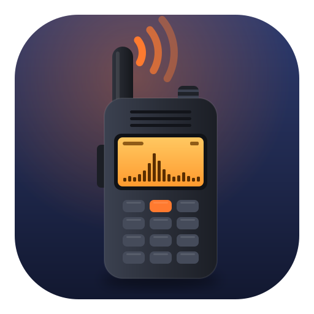
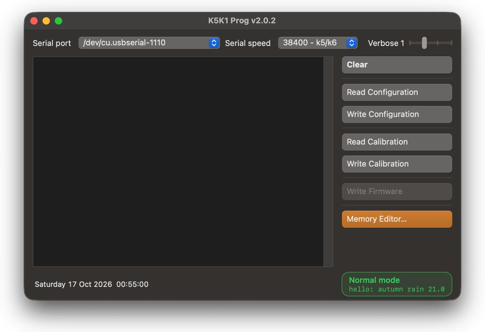
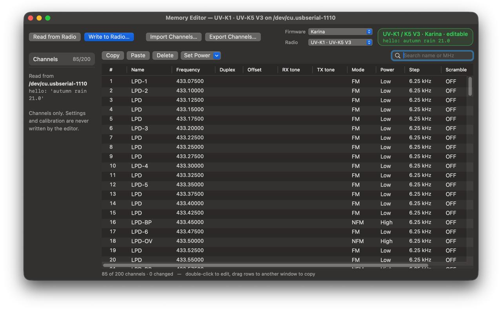

K5K1 ProgРезервная копия, восстановление и прошивка раций Quansheng UV-K5 / UV-K5 V3 / UV-K1 на Mac.
или через Homebrew: brew install --cask eruban/tap/k5k1-prog


Чтение и запись калибровки и конфигурации рации. Сохраните заводскую калибровку до любой прошивки.
UV-K5 V1 и новые UV-K5 V3 / UV-K1. Файл прошивки и загрузчик проверяются до первого отправленного байта, неподходящие сочетания отклоняются.
200 каналов, стоковая прошивка и Карина. Копирование каналов между рациями, импорт и экспорт CHIRP CSV и .img. Пишутся только изменённые каналы, после бэкапа, с проверкой чтением.
В строке статуса видно, какая рация на кабеле, в каком режиме и с какой прошивкой. Кнопки следуют за ней, так что не та операция не запустится.
Те же кнопки, лог и байты в линии, что у виндовой k5prog-win, плюс несколько исправлений безопасности.
Обновления из релизов на GitHub. С Homebrew новые версии ставит brew upgrade.
| Рация | Чип | Загрузчик | Бэкап и восстановление | Прошивка |
|---|---|---|---|---|
| UV‑K5, UV‑K5(8), UV‑K6, UV‑5R Plus (V1) | DP32G030 | 2.x – 4.x | Да | Да |
| UV‑K5 V3, UV‑K1 | PY32F071 | 7.xx | Да | Да |
| UV‑K5 V2, UV‑K6 V2 | PY32F030 | 1.xx | Да | Отказ* |
* Прошивка от V1 оставляет V2 с пустым экраном, поэтому приложение отказывается её шить. Модель надёжно определяется по версии загрузчика: включите рацию с зажатой PTT и нажмите Write Firmware, версия появится в логе.
brew install --cask eruban/tap/k5k1-prog/dev/cu.usbserial-…Да. K5K1 Prog работает на macOS 12 и новее, на Apple Silicon и Intel, без Windows и виртуальных машин. Программа делает резервную копию и восстанавливает калибровку и конфигурацию, прошивает рацию и редактирует каналы.
UV-K5, UV-K5(8), UV-K6 и UV-5R Plus на чипе DP32G030 (V1), а также новые UV-K5 V3 и UV-K1 (PY32F071). На UV-K5 V2 / UV-K6 V2 работают бэкап и восстановление, прошивка отклоняется.
Обычно нет: распространённые кабели на CH340 работают в современной macOS без дополнительных программ. Кабель появляется как /dev/cu.usbserial-…
Для каналов да: редактор памяти правит 200 каналов стоковой прошивки и Карины, импортирует и экспортирует CSV и .img от CHIRP. Настройки меню рации не редактируются.
Любой файл прошивки для вашей модели, .bin или .packed.bin: стоковую Quansheng, Карину, F4HWN и другие. Перед отправкой программа проверяет, подходит ли файл к загрузчику рации.
Бесплатно, открытый код под GPL v3. Приложение подписано и нотаризовано Apple, без телеметрии, в сеть ходит только на GitHub за обновлениями.